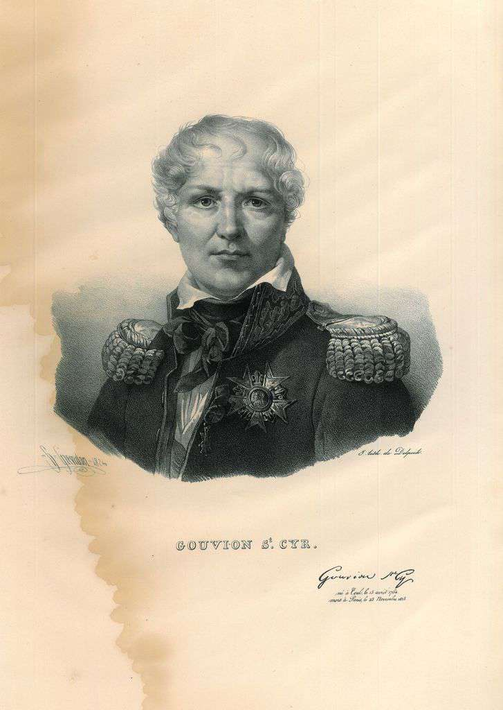
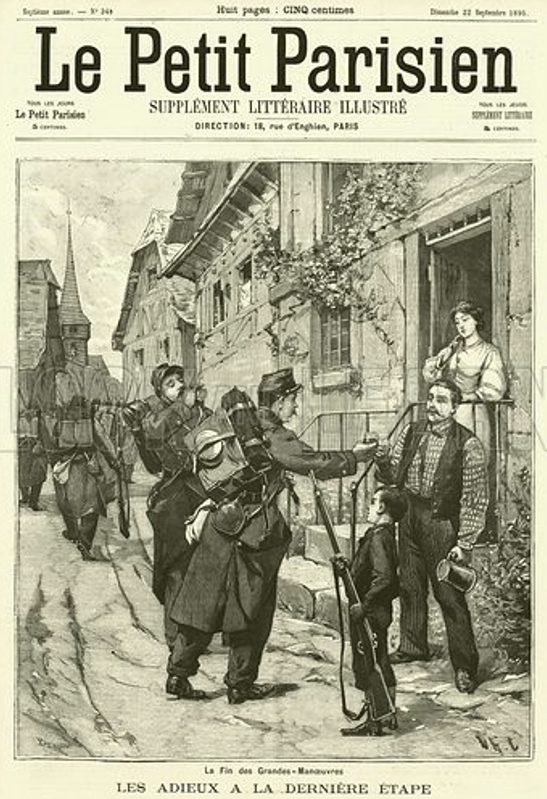
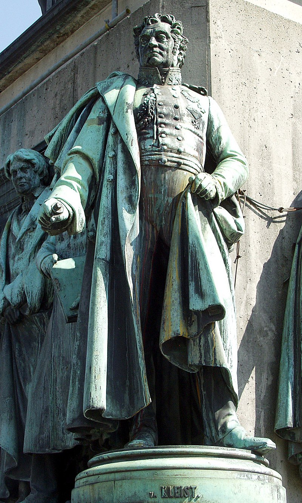
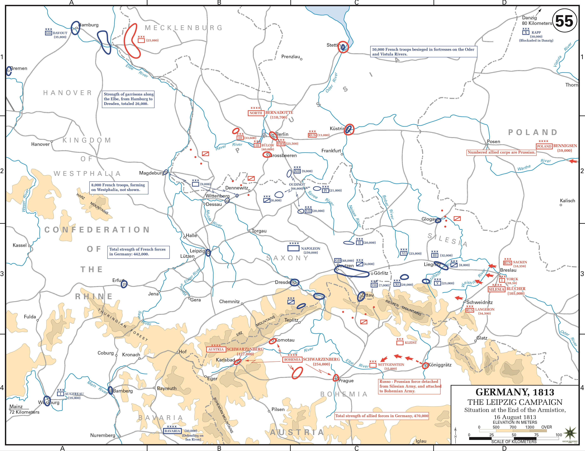
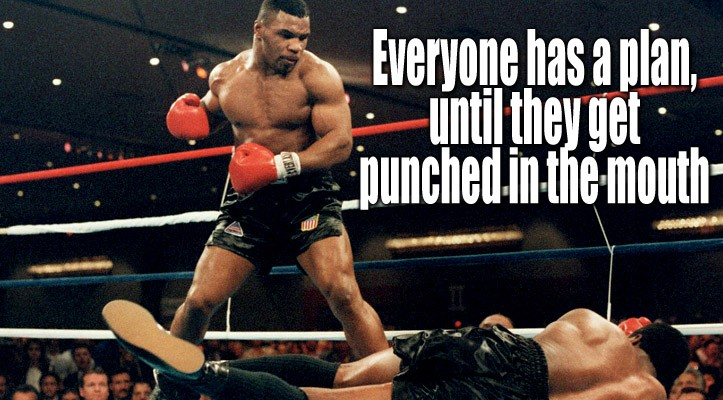

쿨름 전투 에필로그 - 다시 트라헨베르크
게시: 2024-06-24T06:30:32+09:00
흔히 쿨름 전투에 대해, 방담이 무분별하게 연합군의 퇴각을 추격하다 벌어진 패배라는 평가가 많습니다. 이런 분위기에 대해 당시 드레스덴에 있었던 근위포병대의 노엘(Jean-Nicolas-Auguste Noël) 대령은 이렇게 적고 있습니다. "우리 군에 지대한 영향을 준 이 사건에 대한 책임을 방담 장군에게만 물어야 할까? 사람들은 원래 그가 산 속에 남아 프로이센군의 후퇴를 저지해야 했는데, 워낙 성격이 과감했던 방담이 러시아군을 추격하여 산 밑까지 내려갔기 때문에 이런 패전을 겪었다고들 했다. 또는 그게 아니라, 방담이 토플리츠(Toplitz)까지 추격전을 벌였던 것은 황제 폐하의 명령에 부합하는 것이었을까? 또 다른 사람들은 이 모든 사태에 대한 비난을 건성으로 추격에 나섰던 구비옹 생시르(Guvion Saint-Cyr) 원수에게 퍼부었다. 생시르는 훌륭한 군인이었지만 혐오스러운 성격의 소유자로서, 동료들을 곤경에 빠뜨리는 일을 곧잘 저지르곤 했다. 참모 사령부에서는 이런 추측들을 떠들어댔지만, 불운한 지휘관 방담은 포로가 되었으므로 스스로에 대한 변호를 할 수가 없었다. 그러므로 결국 모든 비난은 그에게 떨어졌다. 과감한데다 항상 원수봉을 탐내고 있던 방담이 후방을 경계하지도 않고 토플리츠(역주: Teplitz를 지칭) 계곡으로 거침없이 뛰어들었다는 것이었다. 언제나 일이 벌어진 뒤에 남을 헐뜯는 것은 쉬운 법이다. 여기서 나는 떠도는 소문들을 전할 뿐이고, 나는 어떠한 판결도 내리지 않겠다."

(생시르의 원래 이름은 Laurent Gouvion이었는데, 그는 피혁공이었던 아버지의 가업을 잇는 것을 거부하고 자신이 4살 때 가족을 버리고 떠난 어머니의 새로운 성씨인 Saint-Cyr를 자신의 이름으로 삼았습니다. 노엘 대령이 생시르에 대해 혐오스러운 성격의 소유자라고 했던 것은 그가 평소 똑똑하지만 매우 차가운 성격을 보여주었기 때문이었을 것입니다. 그를 출세길로 이끈 것은 의외로 그림 솜씨였습니다. 그가 혁명군 소속 대위로 라인 방면군에서 복무하고 있을 때, 원래 귀족 출신이었던 퀴스틴(Adam Philippe Custine de Sarreck) 장군이 지나가다 생시르가 주변 풍경을 스켓치하고 있는 것을 보고는 그 솜씨에 감탄하여 자신의 참모진에 넣었던 것입니다. 그때 생시르는 드제(Desaix)와 친구가 되었고 나중에 결국 나폴레옹과도 연을 맺게 되었습니다.) 노엘 대령은 쿨름에서의 패전이 우디노의 그로스비어런 패배 및 막도날의 카츠바흐 패배와 함께 매우 심각한 결과를 가져왔다고 적었습니다. 여전히 나폴레옹에 대한 군의 신뢰에는 문제가 없었지만, 당장 드러난 문제는 독일계 동맹국들의 태도였습니다. 그랑다르메의 일원으로서 프랑스군과 함께 작전 중이던 독일 동맹군들은 당장 문제를 일으키지 않았으나, 그 3개의 패전에서 후퇴하는 와중에 상당수의 독일 동맹국 병사들이 원래 부대로 복귀하지 않고 고향으로 돌아가버리거나, 심지어 적군으로 넘어가기도 했습니다. 또 당장 노엘 대령이 주둔하고 있던 드레스덴과 그 일대의 민간인들의 태도에도 변화가 있었습니다. 처음에는 드레스덴 시민들은 프랑스군을 먹이고 재우는 것에 대해 호의적이었고 부상병들도 정성껏 돌봐주었으나, 아무래도 그렇게 주둔하는 기간이 길어지자 이들의 태도는 갈수록 차가와졌고, 결국은 적대적으로 변했습니다.

(유럽에서는 점령지 뿐만 아니라 동맹국이나 심지어 자국 영토 내에서도, 일반 주민들에게 가옥과 재산 규모에 따라 몇 명씩 병사들을 할당하여 먹이고 재우도록 명령하는 경우가 일반적이었습니다. 주민들은 좋아했을까요? 그럴 리가 없지요. 피점령지 주민들은 물론이고, 자국 주민들도 당연히 매우 싫어했습니다. 이런 관습을 billeting이라고 하는데, 이는 제2차 세계대전 당시 프랑스를 점령한 독일군에서도 시행되었습니다. 그렇게 할당받은 독일군 장교들과 프랑스 민간인 아가씨 사이에서 벌어지는 갈등과 애증 등을 다룬 문학 작품 등이 꽤 있지요. 이 그림은 "마지막 단계에서의 작별 인사, 대규모 군사작전의 종료"(Les Adieux A La Derniere Etape, La Fin des Grandes-Manoeuvres.)라는 제목의 1895년 르 쁘띠 파리지앵(Le Petit Parisien) 신문 삽화입니다. 여기서는 병사들과 주민들이 사이가 좋은 것으로 묘사되었네요.) 한편, 연합군 스스로는 이 승리에 대해 매우 운이 좋아서 거둔 것이라고 평가하는 분위기였습니다. 일단 이 전투는 다른 전투들처럼 주도면밀한 계획에 의해 전개된 작전이 아니라, 누가 이 작전의 총지휘관인지 불분명할 정도로 되는 대로 진행된 전투였습니다. 가령 처음 지휘를 맡았던 오스테르만-톨스토이는 애초에 쿨름에서 방담을 막아설 생각을 아예 하지 않았고, 짜르의 퇴각로도 위험해질 수 있다는 프리드리히 빌헬름의 호소문을 받고서야 황급히 전투에 나섰습니다. 그 뒤로 속속 러시아군에게 증원된 부대들은 오스테르만 휘하의 부대도 아니었고, 그렇다고 프리드리히 빌헬름이 이 모든 병력 증원을 조율한 것도 아니었습니다. 이 모든 군대의 총사령관인 슈바르첸베르크는 이 전투에는 아예 관여하지 않았습니다. 연합군의 사실상 제1인자인 짜르 알렉산드르도 쿨름에서 전투가 벌어졌는데 이길 수 있을 것 같다는 소식을 뒤늦게서야 듣고 그 근처로 달려왔고, 정작 전투가 벌어지던 보헤미아의 군주인 오스트리아 황제 프란츠 1세는 방담이 온다는 소식에 황급히 피난을 떠났습니다. 쿨름 전투는 혼란 그 자체로서, 방담은 후방에서 나폴레옹이 곧 나타날 것이라고 믿고 싸웠고, 실은 연합군도 언제 나폴레옹이 나타날지 몰라 전전긍긍하고 있었습니다. 승리의 주역이었던 클라이스트는 사실 유능한 군인이라기보다는 그냥 프로이센 세습 귀족이었을 뿐이었고, 어느 순간 자신의 후방에 나폴레옹이 나타날지 모르는 이 위험한 전투에 뛰어드는 것을 매우 꺼려했습니다. 둘쨋날 막판에 포위망을 뚫으려던 방담이 전력을 기울여 클라이스트의 프로이센군을 공격했을 때, 프로이센군도 자신들이 패배하는 줄 알고 프랑스군 못지 않게 공포에 질려 무질서하게 흩어지기도 했습니다. 심지어 클라이스트 본인도 그렇게 무너지는 프로이센군 병사들 속에서 겁을 먹고 숲 속에 숨어있다가, 한참 뒤에 러시아군 디빗취 장군과 마주쳤습니다. 디빗취 장군이 클라이스트에게 '여기서 뭘 하시냐, 아무튼 대승을 거둔 것을 축하한다'라고 말하는 것을 듣고서야 클라이스트는 자신이 승리했다는 것을 알았다고 합니다.

(쾰른에 있는 프리드리히 빌헬름 3세의 기념비 발치에 있는 클라이스트의 동상입니다. 그의 업적 중 가장 큰 것이... 실은 유일한 업적이 바로 이 쿨름 전투였습니다. 나중에 그는 놀렌도르프 백작(Graf Kleist von Nollendorf)이 되는데, 바로 쿨름 전투의 업적을 기리는 것이었습니다.) 이 일화는 클라이스트가 유독 겁이 많았다는 것을 보여주는 것이 아닙니다. 실제로 연합군 수뇌부는 쿨름 전투 직후에도 나폴레옹이 보헤미아로 밀고 들어올 것을 두려워했습니다. 20만이 넘는 대군을 몰고 텅 빈 드레스덴에 빈집털이 갔다가, 황급히 되돌아온 나폴레옹에게 완패를 당한 것은 슈바르첸베르크를 비롯한 수뇌부에게 대단한 충격을 주었던 것입니다. 슈바르첸베르크는 드레스덴에서 승기를 잡은 나폴레옹이 곧 자신의 뒤를 맹추격할 것이고, 그랑다르메의 대군이 파죽지세로 보헤미아를 침공하여 다시 오스트리아의 수도 빈까지 노릴 것이라는 공포에 사로잡혔습니다. 물론 그에게도 그로스베런에서 우디노가 패전했다는 소식은 이미 도착해 있었지만, 아직 카츠바흐 전투에서 블뤼허가 막도날을 격파했다는 소식은 몰랐기 때문에 더욱 그랬습니다. 그래서 슈바르첸베르크는 블뤼허에게 편지를 보내 슐레지엔 방면군 소속 러시아군 군단들을 보헤미아로 보내줄 것을 요청하기도 했습니다. 나중에 카츠바흐 전투 소식이 들려오고 나폴레옹이 보헤미아로 쳐들어올 기색이 보이지 않는다는 정찰 보고가 들어온 뒤에야 연합군은 한숨을 돌릴 수 있었습니다. 이렇게 여유가 생기니 전체 그림이 연합군 수뇌부의 눈에 들어왔는데, 그 윤곽은 나폴레옹이 있던 드레스덴에서만 패배했을 뿐, 나폴레옹이 없던 쿨름, 그로스비어런, 카츠바흐에서는 모두 승리를 거두었다는 것이었습니다. 이게 뜻하는 바가 무엇이었을까요? 나폴레옹은 천하무적이니 앞으로도 나폴레옹과는 싸우지 말고 그 부하 원수들만 건드리자? 흔히 이때의 상황을 그렇게 해석하기도 합니다만 당시 연합군은 그렇게 생각하지는 않았습니다.

(트라헨베르크 의정서가 낳은 옥동자가 바로 이 라이프치히 전투였습니다. 흔히 나폴레옹의 패배라고 하면 워털루를 생각합니다만 그건 영미권 문화가 세계를 정복했기 때문일 뿐이며, 실제로 나폴레옹을 몰락시킨 것은 바로 이 라이프치히 전투지요.) 원래 연합군의 기본 작전 계획인 트라헨베르크 의정서는 나폴레옹을 피하자는 것이 아니었고, 한 방면군이 나폴레옹의 주력군을 막아서는 동안 나머지 2개 방면군은 그 측면과 후면을 공격한다는 것이었습니다. 그런데 이번에 벌어진 4개 전투에서 1승3패를 거두어 종합성적이 나쁘지는 않았지만, 결정적인 주전장이었던 드레스덴 전투에서 패배한 것은 뼈아픈 결과였습니다. 그 패배 이유는 간단했습니다. 트라헨베르크 의정서에 따라 3개 방면군이 유기적으로 협력하여 싸우지 않고 3개 방면군이 각각 따로 싸웠던 것입니다. 결국 나폴레옹을 최종적으로 패배시키기 위해서는 3개 방면군이 나폴레옹이 웅크린 작센으로 모여야 했습니다. 이 각성은 결국 라이프치히 전투로 이어집니다.
하지만 모든 풋내기들에게는 작전이 있기 마련이고, 그런 작전 계획은 제대로 된 고수를 만나 두들겨 맞아보면 다 날아가기 마련입니다. 나폴레옹이 연합군의 그런 뇌내망상에 대해 두 손 놓고 있을 사람이 아니었습니다. 나폴레옹은 언제나 공격을 위주로 하는 전술가로서, 심지어 방어를 할 때에도 공세로 나서는 스타일이었습니다. 그런 나폴레옹이 연합군이 바라는 대로 정말 드레스덴에 웅크린 채 연합군의 움직임을 기다리고만 있었을까요?

Source : The Life of Napoleon Bonaparte, by William Milligan Sloane Napoleon and the Struggle for Germany, by Leggiere, Michael V With Napoleon's Guns by Colonel Jean-Nicolas-Auguste Noël https://www.pinterest.co.uk/pin/143059725653536439/ https://napoleon-monuments.eu/Napoleon1er/Vandamme.htm https://www.frenchempire.net/biographies/gouvionstcyr/ https://battlefieldanomalies.com/napoleonic-wars/the-battle-of-kulm/ https://commons.wikimedia.org/wiki/Battle_of_Kulm https://theonlineportraitgallery.com/portrait/laurent-de-gouvion-saint-cyr-1st-marquis-of-saint-cyr-2/ https://www.lookandlearn.com/history-images/M516773/End-of-the-French-Armys-grand-manoeuvres https://de.wikipedia.org/wiki/Friedrich_von_Kleist https://x.com/bazaarofwar/status/1713953155673628860/photo/1